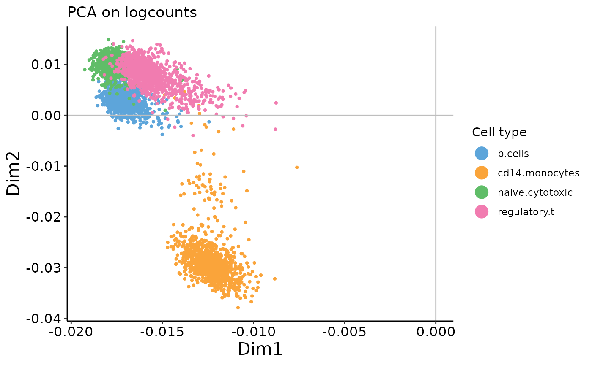
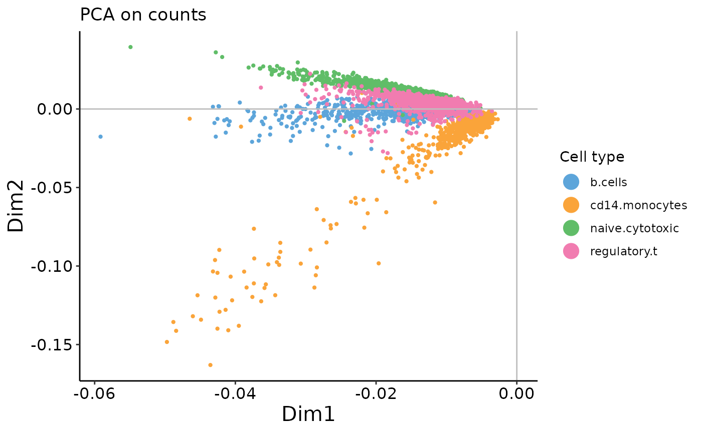
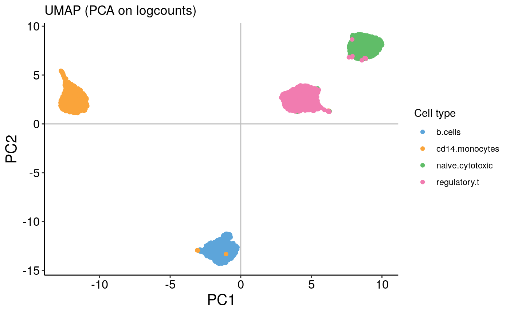
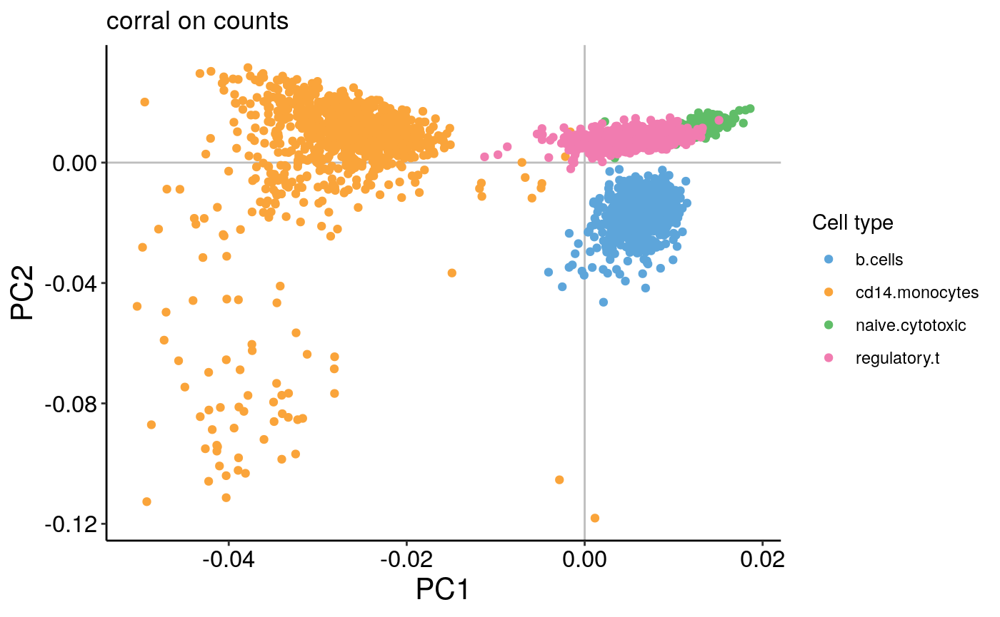
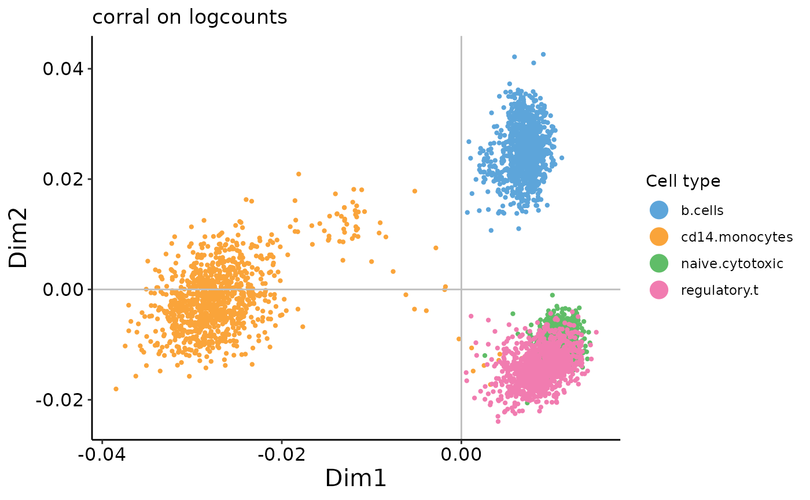
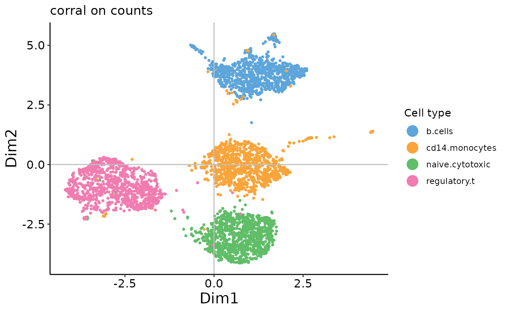
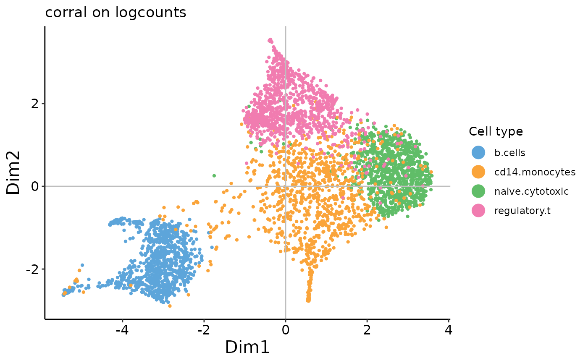

Introduction
Single-cell ’omics analysis enables high-resolution characterization of heterogeneous populations of cells by quantifying measurements in individual cells and thus provides a fuller, more nuanced picture into the complexity and heterogeneity between cells. However, the data also present new and significant challenges as compared to previous approaches, especially as single-cell data are much larger and sparser than data generated from bulk sequencing methods. Dimensionality reduction is a key step in the single-cell analysis to address the high dimensionality and sparsity of these data, and to enable the application of more complex, computationally expensive downstream pipelines.
In this example, we will use the Zhengmix4eq benchmarking dataset from the DuoClustering2018 package.
library(SingleCellExperiment)
library(corral)
library(ggplot2)
library(uwot)
library(DuoClustering2018)
zm4eq.sce <- sce_full_Zhengmix4eq()The data loads as a SingleCellExperiment object:
zm4eq.sce## class: SingleCellExperiment
## dim: 15568 3994
## metadata(1): log.exprs.offset
## assays(3): counts logcounts normcounts
## rownames(15568): ENSG00000237683 ENSG00000228327 ... ENSG00000215700
## ENSG00000215699
## rowData names(10): id symbol ... total_counts log10_total_counts
## colnames(3994): b.cells1147 b.cells6276 ... regulatory.t1084
## regulatory.t9696
## colData names(14): dataset barcode ... libsize.drop feature.drop
## reducedDimNames(2): PCA TSNE
## mainExpName: NULL
## altExpNames(0):We’ll use assay to access the count and logcount matrices. The genes are in the rows, and the cells are in the columns.
counts_mat <- assay(zm4eq.sce, 'counts')
logcounts_mat <- assay(zm4eq.sce, 'logcounts')colData and rowData contain (and can be used to access) the cell and gene metadata, respectively.
head(colData(zm4eq.sce))## DataFrame with 6 rows and 14 columns
## dataset barcode phenoid total_features
## <integer> <character> <character> <integer>
## b.cells1147 1 ACGGAGGACCGAAT-1 b.cells 427
## b.cells6276 1 GCAGCGTGCCGAAT-1 b.cells 340
## b.cells6144 1 GATTTAGAGTGTAC-1 b.cells 602
## b.cells6285 1 GCAGCTCTAGAACA-1 b.cells 410
## b.cells8679 1 TCAGTGGAGTTCAG-1 b.cells 411
## b.cells6455 1 GCCTCATGCGGGAA-1 b.cells 462
## log10_total_features total_counts log10_total_counts
## <numeric> <numeric> <numeric>
## b.cells1147 2.63144 1096 3.04021
## b.cells6276 2.53275 857 2.93349
## b.cells6144 2.78032 1593 3.20249
## b.cells6285 2.61384 743 2.87157
## b.cells8679 2.61490 1031 3.01368
## b.cells6455 2.66558 1043 3.01870
## pct_counts_top_50_features pct_counts_top_100_features
## <numeric> <numeric>
## b.cells1147 48.1752 66.7883
## b.cells6276 51.1085 69.0782
## b.cells6144 46.2649 63.0257
## b.cells6285 42.7995 57.8735
## b.cells8679 51.0184 67.3133
## b.cells6455 43.9118 60.4986
## pct_counts_top_200_features pct_counts_top_500_features
## <numeric> <numeric>
## b.cells1147 79.2883 100.000
## b.cells6276 83.6639 100.000
## b.cells6144 74.7646 93.597
## b.cells6285 71.7362 100.000
## b.cells8679 79.5344 100.000
## b.cells6455 74.8802 100.000
## is_cell_control libsize.drop feature.drop
## <logical> <logical> <logical>
## b.cells1147 FALSE FALSE FALSE
## b.cells6276 FALSE FALSE FALSE
## b.cells6144 FALSE FALSE FALSE
## b.cells6285 FALSE FALSE FALSE
## b.cells8679 FALSE FALSE FALSE
## b.cells6455 FALSE FALSE FALSE
head(rowData(zm4eq.sce))## DataFrame with 6 rows and 10 columns
## id symbol is_feature_control mean_counts
## <character> <character> <logical> <numeric>
## ENSG00000237683 ENSG00000237683 AL627309.1 FALSE 0.00500
## ENSG00000228327 ENSG00000228327 RP11-206L10.2 FALSE 0.00200
## ENSG00000237491 ENSG00000237491 RP11-206L10.9 FALSE 0.00150
## ENSG00000225880 ENSG00000225880 LINC00115 FALSE 0.00675
## ENSG00000230368 ENSG00000230368 FAM41C FALSE 0.00025
## ENSG00000187634 ENSG00000187634 SAMD11 FALSE 0.00050
## log10_mean_counts rank_counts n_cells_counts pct_dropout_counts
## <numeric> <numeric> <integer> <numeric>
## ENSG00000237683 0.002166062 6803.0 19 99.525
## ENSG00000228327 0.000867722 4668.0 8 99.800
## ENSG00000237491 0.000650954 4132.0 6 99.850
## ENSG00000225880 0.002921638 7635.5 27 99.325
## ENSG00000230368 0.000108560 871.0 1 99.975
## ENSG00000187634 0.000217093 2159.5 2 99.950
## total_counts log10_total_counts
## <numeric> <numeric>
## ENSG00000237683 20 1.322219
## ENSG00000228327 8 0.954243
## ENSG00000237491 6 0.845098
## ENSG00000225880 27 1.447158
## ENSG00000230368 1 0.301030
## ENSG00000187634 2 0.477121This dataset includes approximately 4,000 pre-sorted and annotated cells of 4 types mixed by Duo et al. in approximately equal proportions (Duò, Robinson, and Soneson, n.d.). The cells were sampled from a “Massively parallel digital transcriptional profiling of single cells” (Zheng et al. 2017).
table(zm4eq.sce$phenoid) # the $ operator can be used to access columns in colData##
## b.cells cd14.monocytes naive.cytotoxic regulatory.t
## 999 1000 998 997For each of the 4,000 cells, there are counts for over 15,000 genes.
dim(counts_mat)## [1] 15568 3994When examining a dataset like this, we might be interested in understanding more about the cells – for example, how many clusters are there and what are the cell types?
We might also be interested in understanding the features themselves, perhaps to identify from the 15,000 genes those that are associated wth particular clusters.
Matrix factorization methods like PCA enable us to look at both “row” and “column” associations.
PCA
First, we will select features with a simple, crude approach – we’ll sort the genes by variance, then select the 500 genes with highest variance. Selecting variable genes will improve the signal to noise ratio. Moreover, from a practical perspective, this will reduce the dataset size so that analysis steps will be computationally tractable. (Typically, in actual analysis pipelines, selection of highly variable genes (HVGs) is performed using a mean-variance stabilization, for example as in the scran package, or in the Seurat packages. This is because there is a relationship between the mean and the variance of the features. See the Orchestrating Single Cell Analysis book for more discussion on feature selection approaches.)
gene_vars <- apply(logcounts_mat, FUN = var, MARGIN = 1)
gene_vars <- sort(gene_vars, decreasing = T)
counts_mat <- counts_mat[names(gene_vars[1:500]),]
logcounts_mat <- logcounts_mat[names(gene_vars[1:500]),]We will start by using prcomp to perform PCA on the counts and the logcounts, which will find cell embeddings in a lower dimensional space.
For purposes of comparison later, we’ll also record the runtime.
prc_time <- system.time(counts_prc <- prcomp(counts_mat))
logcounts_prc <- prcomp(logcounts_mat)We’ll use the plot_embedding function from the corral package to plot the cell embeddings:
plot_embedding(counts_prc$rotation,
xpc = 1,
plot_title = 'PCA on counts',
color_vec = zm4eq.sce$phenoid,
color_title = 'Cell type',
saveplot = F)
plot_embedding(logcounts_prc$rotation,
xpc = 1,
plot_title = 'PCA on logcounts',
color_vec = zm4eq.sce$phenoid,
color_title = 'Cell type',
saveplot = F)
These examples illustrate the importance of performing pre-processing – when PCA is performed on raw counts, we see an arch effect. In contrast, when performed on log-transformed* counts, there is no arch effect. See our recent mini-review article in Frontiers in Oncology for further discussion of data pre-processing and transformations (Hsu and Culhane 2020).
* Note: while the log-transformation(\(log(x+1)\))does improve the results with PCA here, recent papers examine the theoretical basis for this transformation and question whether it is appropriate for scRNAseq data, such as Townes et al. 2019 and Hafemeister & Satija 2019. Nonetheless, \(log(x+1)\) remains a popular pre-processing choice.
Interactive example 1
On the count data, the first two PCs contain a strong arch effect. On both plots, use the xpc argument in the plotting function to change which PC you’re looking at. What do the 2nd and 3rd PCs of the PCA on counts plot look like?
plot_embedding(counts_prc$rotation,
xpc = 1, # CHANGE ME
plot_title = 'PCA on counts',
color_vec = zm4eq.sce$phenoid,
color_title = 'Cell type',
saveplot = F)
plot_embedding(logcounts_prc$rotation,
xpc = 1, # CHANGE ME
plot_title = 'PCA on logcounts',
color_vec = zm4eq.sce$phenoid,
color_title = 'Cell type',
saveplot = F)
Visualizing embeddings
While PCA enables us to find a much lower dimensional representation, even if we are interested in just using 10 PCs, that is still hard to visualize. Uniform Manifold Approximation and Projection (UMAP) is a popular and fast dimension method that can be used on embeddings to find a further reduced dimensional representation.
We’ll use UMAP (uwot::umap) to improve our visualization, incorporating the first 10 components of the PCA result as performed on the logcounts:
logcounts_prc_umap <- umap(logcounts_prc$rotation[,1:10], n_neighbors = 30)
plot_embedding(logcounts_prc_umap,
xpc = 1,
plot_title = 'UMAP (PCA on logcounts)',
color_vec = zm4eq.sce$phenoid,
color_title = 'Cell type',
saveplot = F)
We can see that the cells cluster clearly by cell type.
What else could we have changed here?
- Experiment with what happens if you use more or fewer PCs.
-
Change the
n_neighborsargument in theumapcall and see how it changes your embedding. This parameter modulates whether more local or global structure will be preserved. - What does UMAP on the counts reduction look like? What happens if you drop the first PC (which has the strong arch effect)?
Speeding up PCA
This dataset is small compared to many that we encounter in biology. We are often interested in analyzing far more than 4,000 cells at one time. Further, we may want to incorporate more features. However, even on this small dataset, it takes a long time to run prcomp on the full dataset without any feature selection.
How can we speed this up?
The prcomp function uses an svd call, which by default, will compute all of the components: the number of components is the smaller dimension (number of rows or columns). We can use the nv (or nu) arguments in svd to control how many components are returned, but all of the components will nonetheless be computed. However, we are usually not interested in keeping all the components, so we don’t need to compute them beyond PC50. irlba::irlba uses an iterative algorithm to compute a fast approximation to singular value decomposition, and provides a much speedier alternative for when we don’t need a full decomposition.
set.seed(2020)
mat <- matrix(sample(1:10,10000000, replace = T), nrow = 1000)
system.time(svd_mat <- svd(mat, nv = 10))## user system elapsed
## 8.153 0.776 4.606
system.time(irl_mat <- irlba::irlba(mat, nv = 10))## user system elapsed
## 3.510 0.056 1.802Since this demonstration matrix is small, both irlba and svd are fast. However, we can observe that svd takes substantially longer than irlba. As datasets scale in size, this has a big impact, and the difference in speed grows. (This difference also depends on what machine you are running on – with less compute power, the difference will be starker.)
We can verify that irlba is giving us a good approximation of svd:
Comparing singular values..
svd_mat$d[1:10]## [1] 17398.6832 376.8733 376.1027 375.2666 374.6135 373.9239
## [7] 373.3499 372.6006 372.3420 371.8883
irl_mat$d## [1] 17398.6832 376.8733 376.1027 375.2666 374.6135 373.9239
## [7] 373.3499 372.6006 372.3417 371.8863Comparing cell embeddings (right singular values; v matrix) [Note, that depending on the seed, the sign of the irlba output may flip sign. This generally doesn’t matter for downstream analysis, unless integrating datasets.]
svd_mat$v[1:5, 1:5]## [,1] [,2] [,3] [,4] [,5]
## [1,] -0.009778136 0.019108048 -1.939095e-02 0.0026076962 -0.0122338432
## [2,] -0.010080091 0.014660172 2.341659e-03 -0.0009068255 0.0139706781
## [3,] -0.009820140 0.004629647 -4.099114e-03 0.0175370979 -0.0028319681
## [4,] -0.009839423 -0.012709697 3.692118e-03 0.0027956347 -0.0004302772
## [5,] -0.010139030 0.003275806 4.090792e-05 0.0097249414 0.0084838761
irl_mat$v[1:5, 1:5]## [,1] [,2] [,3] [,4] [,5]
## [1,] -0.009778136 -0.019108048 -1.939095e-02 0.0026076962 0.0122338432
## [2,] -0.010080091 -0.014660172 2.341659e-03 -0.0009068255 -0.0139706781
## [3,] -0.009820140 -0.004629647 -4.099114e-03 0.0175370979 0.0028319682
## [4,] -0.009839423 0.012709697 3.692118e-03 0.0027956347 0.0004302772
## [5,] -0.010139030 -0.003275806 4.090792e-05 0.0097249414 -0.0084838761Interactive example 3
As we saw above, we can achieve the same results as a prcomp call by using the scale and svd function. Similarly, we can substitute irlba for svd.
Run PCA as in prcomp using irlba. Compare the runtime with the prcomp and scale + svd approaches above.
# as in the above examples, you can use system.time() to check runtime
# if your command is longer than 1 line, you can encase them within {},
# then put it inside the system.time() call
# e.g., system.time({set of commands
# that take more than 1 line})Brief introduction to correspondence analysis
PCA is the oldest dimension reduction method, and while it is arguably the most popular, it is only one of many possible methods; there are numerous methods related to and adapted from PCA. One such method is correspondence analysis (COA).
Instead of a centering or z-score transformation as in PCA, COA applies a \(\chi^2\) transformation prior to performing SVD, and is appropriate for use with count data. It is popular in other fields, such as ecology, business research, and archaeology, for finding associations between rows and columns.
Correspondence analysis is implemented in various R packages, including:
-
ade4::dudi.coa() -
made4::ord(type = 'coa') -
vegan::cca()(not to be confused with canonical correlation analysis, also abbreviated CCA) -
FactoMineR::CA()
However, these implementations are not designed for very large data, and thus are unwieldy for single-cell analysis. To enable the fast (and easy) application of COA to such datasets, we developed the corral package (which we’ve been using to plot embeddings, up til this point!).

corral::corral performs correspondence analysis:
corral_time <- system.time(corral_counts <- corral(counts_mat))
corral_logcounts <- corral(logcounts_mat)
corral_logcounts## corral output summary===========================================
## Output "list" includes standard coordinates (SCu, SCv),
## principal coordinates (PCu, PCv), & SVD output (u, d, v)
## Variance explained----------------------------------------------
## PC1 PC2 PC3 PC4 PC5 PC6 PC7 PC8
## percent.Var.explained 0.13 0.04 0.02 0.01 0.01 0.01 0.00 0.00
## cumulative.Var.explained 0.13 0.17 0.19 0.20 0.20 0.21 0.21 0.22
##
## Dimensions of output elements-----------------------------------
## Singular values (d) :: 30
## Left singular vectors & coordinates (u, SCu, PCu) :: 500 30
## Right singular vectors & coordinates (v, SCv, PCv) :: 3994 30
## See corral help for details on each output element.
## Use plot_embedding to visualize; see docs for details.
## ================================================================We used the irlba fast SVD approximation, so corral runs faster than prcomp (difference is more pronounced with less computational resources, e.g. on laptop):
prcomp runtime:
prc_time## user system elapsed
## 1.281 0.164 0.765corral runtime:
corral_time## user system elapsed
## 1.775 0.424 1.287Again, we can visualize the direct output from corral:
plot_embedding(corral_counts$v,
xpc = 1,
plot_title = 'corral on counts',
color_vec = zm4eq.sce$phenoid,
color_title = 'Cell type',
saveplot = F)
plot_embedding(corral_logcounts$v,
xpc = 1,
plot_title = 'corral on logcounts',
color_vec = zm4eq.sce$phenoid,
color_title = 'Cell type',
saveplot = F)
In contrast to the results from PCA, we can see that there is no arch effect in the first two PCs on the count data.
We can also compute and visualize the UMAP embeddings:
corral_counts_umap <- umap(corral_counts$v, n_neighbors = 30)
corral_logcounts_umap <- umap(corral_logcounts$v, n_neighbors = 30)
plot_embedding(corral_counts_umap,
xpc = 1,
plot_title = 'corral on counts',
color_vec = zm4eq.sce$phenoid,
color_title = 'Cell type',
saveplot = F)
plot_embedding(corral_logcounts_umap,
xpc = 1,
plot_title = 'corral on logcounts',
color_vec = zm4eq.sce$phenoid,
color_title = 'Cell type',
saveplot = F)
Interactive example 4
Load another scRNAseq benchmarking dataset from the DuoClustering2018 package and compare the results from using different dimension reduction methods.
We load and pull out the logcounts matrix from set up the Zhengmix4uneq dataset, which is similar to the one we used above except that the cells are in unbalanced groups. Instead of loading the full count matrix as we did above, we took the pre-filtered matrix (already selected the HVGs). Feel free to select a different one; find the list of options in the documentation for the DuoClustering2018 package.
zm4uneq <- sce_filteredExpr10_Zhengmix4uneq()
zm4uneq_logcounts <- assay(zm4uneq, 'logcounts')## R version 4.1.0 (2021-05-18)
## Platform: x86_64-pc-linux-gnu (64-bit)
## Running under: Ubuntu 20.04.2 LTS
##
## Matrix products: default
## BLAS/LAPACK: /usr/lib/x86_64-linux-gnu/openblas-pthread/libopenblasp-r0.3.8.so
##
## locale:
## [1] LC_CTYPE=en_US.UTF-8 LC_NUMERIC=C
## [3] LC_TIME=en_US.UTF-8 LC_COLLATE=en_US.UTF-8
## [5] LC_MONETARY=en_US.UTF-8 LC_MESSAGES=C
## [7] LC_PAPER=en_US.UTF-8 LC_NAME=C
## [9] LC_ADDRESS=C LC_TELEPHONE=C
## [11] LC_MEASUREMENT=en_US.UTF-8 LC_IDENTIFICATION=C
##
## attached base packages:
## [1] stats4 stats graphics grDevices utils datasets methods
## [8] base
##
## other attached packages:
## [1] DuoClustering2018_1.11.0 uwot_0.1.10
## [3] Matrix_1.3-4 ggplot2_3.3.5
## [5] corral_1.3.1 SingleCellExperiment_1.15.1
## [7] SummarizedExperiment_1.23.1 Biobase_2.53.0
## [9] GenomicRanges_1.45.0 GenomeInfoDb_1.29.3
## [11] IRanges_2.27.0 S4Vectors_0.31.0
## [13] BiocGenerics_0.39.1 MatrixGenerics_1.5.2
## [15] matrixStats_0.60.0
##
## loaded via a namespace (and not attached):
## [1] colorspace_2.0-2 ellipsis_0.3.2
## [3] mclust_5.4.7 rprojroot_2.0.2
## [5] XVector_0.33.0 fs_1.5.0
## [7] dichromat_2.0-0 farver_2.1.0
## [9] MultiAssayExperiment_1.19.5 bit64_4.0.5
## [11] RSpectra_0.16-0 interactiveDisplayBase_1.31.2
## [13] AnnotationDbi_1.55.1 fansi_0.5.0
## [15] cachem_1.0.5 knitr_1.33
## [17] jsonlite_1.7.2 dbplyr_2.1.1
## [19] png_0.1-7 shiny_1.6.0
## [21] BiocManager_1.30.16 mapproj_1.2.7
## [23] compiler_4.1.0 httr_1.4.2
## [25] assertthat_0.2.1 fastmap_1.1.0
## [27] later_1.2.0 htmltools_0.5.1.1
## [29] tools_4.1.0 gtable_0.3.0
## [31] glue_1.4.2 GenomeInfoDbData_1.2.6
## [33] reshape2_1.4.4 dplyr_1.0.7
## [35] ggthemes_4.2.4 maps_3.3.0
## [37] rappdirs_0.3.3 Rcpp_1.0.7
## [39] jquerylib_0.1.4 pkgdown_1.6.1
## [41] vctrs_0.3.8 Biostrings_2.61.1
## [43] ExperimentHub_2.1.4 xfun_0.24
## [45] stringr_1.4.0 mime_0.11
## [47] lifecycle_1.0.0 irlba_2.3.3
## [49] AnnotationHub_3.1.4 zlibbioc_1.39.0
## [51] scales_1.1.1 ragg_1.1.3
## [53] promises_1.2.0.1 yaml_2.2.1
## [55] curl_4.3.2 memoise_2.0.0
## [57] gridExtra_2.3 sass_0.4.0
## [59] stringi_1.7.3 RSQLite_2.2.7
## [61] BiocVersion_3.14.0 highr_0.9
## [63] desc_1.3.0 filelock_1.0.2
## [65] pals_1.7 rlang_0.4.11
## [67] pkgconfig_2.0.3 systemfonts_1.0.2
## [69] bitops_1.0-7 evaluate_0.14
## [71] lattice_0.20-44 purrr_0.3.4
## [73] labeling_0.4.2 transport_0.12-2
## [75] bit_4.0.4 tidyselect_1.1.1
## [77] plyr_1.8.6 magrittr_2.0.1
## [79] R6_2.5.0 generics_0.1.0
## [81] DelayedArray_0.19.1 DBI_1.1.1
## [83] pillar_1.6.2 withr_2.4.2
## [85] KEGGREST_1.33.0 RCurl_1.98-1.3
## [87] tibble_3.1.3 crayon_1.4.1
## [89] utf8_1.2.2 BiocFileCache_2.1.1
## [91] rmarkdown_2.9 viridis_0.6.1
## [93] grid_4.1.0 data.table_1.14.0
## [95] blob_1.2.2 FNN_1.1.3
## [97] digest_0.6.27 xtable_1.8-4
## [99] tidyr_1.1.3 httpuv_1.6.1
## [101] textshaping_0.3.5 munsell_0.5.0
## [103] viridisLite_0.4.0 bslib_0.2.5.1